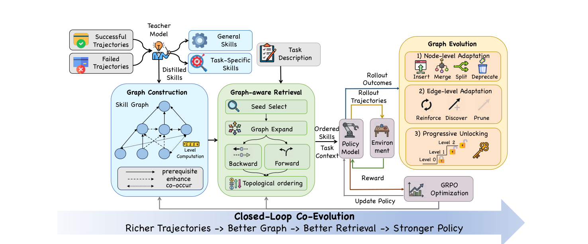
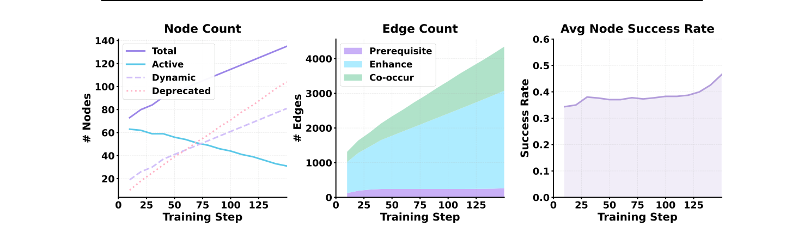
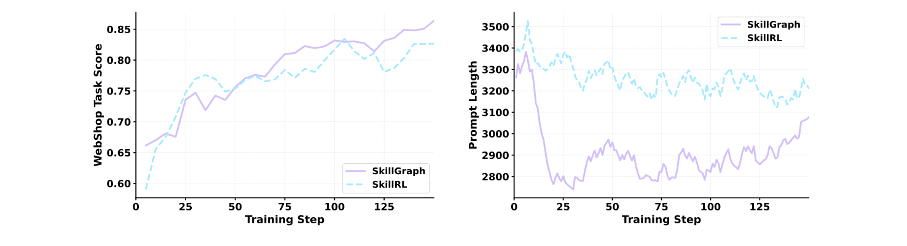
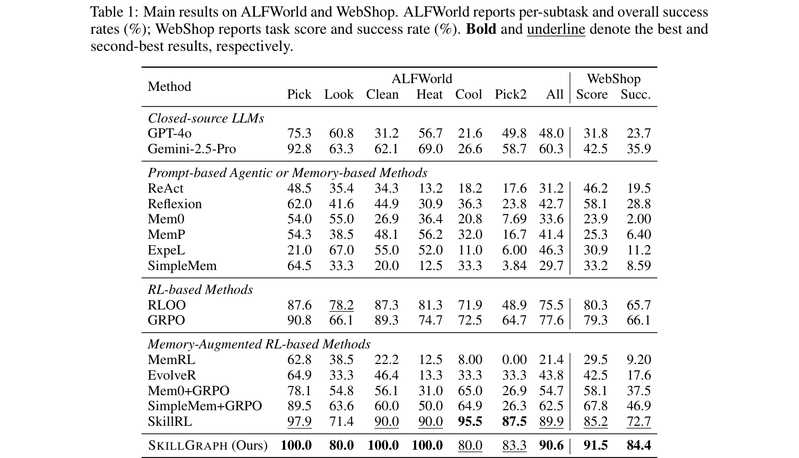
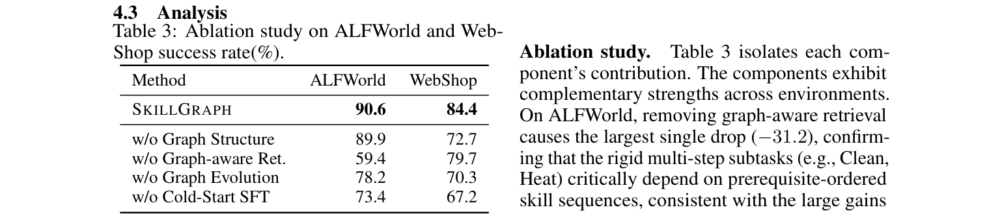

基于 arXiv:2605.12039 的极简文献拆解｜七点提取框架
文章名字：SkillGraph: Skill-Augmented Reinforcement Learning for Agents via Evolving Skill Graphs
作者与机构：Xiaoyuan Li, Moxin Li, Keqin Bao, Yubo Ma 等（中国科学技术大学 + 阿里巴巴集团 + 新加坡国立大学）
期刊与会议：arXiv:2605.12039（2026-05 预印本，尚未见正式会议归属）
论文类型：Method（方法论文，RL + agent 技能记忆）
一句话定位：把扁平 skill 库升级为带 typed 依赖边的技能图，让 skill 与 agent policy 在 RL 训练中协同演化，是 skill-RL 线"结构化记忆"路线的代表。
问题：现有 skill 库把技能存为孤立条目、仅靠语义相似检索，导致两个死结——检索非组合性（无法返回依赖有序的 skill 序列）；更新非结构化（无法判断何时合并、拆分、弃用技能）。
方法：提出 SkillGraph，把技能表示为有向图节点，typed edge 编码 prerequisite / enhance / co-occurrence 关系；三阶段闭环——图构建（轨迹蒸馏技能）、图感知检索（种子扩展加拓扑排序）、图演化（节点级增删改加边级权重演化）。
贡献：graph-structured skill library 的形式化定义；依赖感知检索与结构化更新的 RL 闭环框架；多 benchmark 的 SOTA 验证。
结果：ALFWorld 90.6%（超 GPT-4o 42.6 分）、WebShop 84.4%（超 SkillRL 11.7 分）；消融显示去掉 graph-aware retrieval，ALFWorld 从 90.6 暴跌至 59.4。
Skill library：把 agent 反复出现的解题模式蒸馏成可复用单元（自然语言或可执行代码），供后续任务检索复用。
GRPO（Group Relative Policy Optimization）：一种无需 critic 的 RL 算法，用一组 rollout 的相对优势作奖励信号来优化 policy。
Typed edge：边不仅连节点，还带语义类型（此处 prerequisite、enhance、co-occur），使图能表达"依赖"而非纯相似。
agent 记忆与技能复用分三派——扁平经验池（ExpeL、Reflexion），语义相似检索，无结构；层次化或图结构（A-MEM、GraphRAG），有结构但多为声明性事实，不演化；RL 加技能（Voyager、SkillRL），技能与 policy 共演化，但仍是扁平 bank。SkillGraph 把图结构与 RL 协同结合，是"结构化加可演化"路线的推进。
三件事成熟——GRPO 让小模型 RL 训练稳定可行；agent benchmark（ALFWorld、WebShop）足以验证组合式任务；前作 SkillRL 证明了 flat skill bank 的可行性，"加图"是自然下一步。
技术瓶颈：扁平 skill 库的两条死路——检索非组合性（ALFWorld 的 heat and place 需要有序技能链，扁平 top-k 返回一堆但不知执行顺序）；更新无结构（无信号告诉你两个 skill 重复该合并，或某个 skill 太宽泛该拆分）。
研究动机：作者意识到核心瓶颈不在"如何获取技能"而在"如何组织、检索、更新技能"。若显式建模 skill 间关系，检索能产出依赖感知的序列，更新也有原则依据。这把问题从"蒸馏"重心转向"结构化组织"。
创新概述：三阶段闭环（图构建、图感知检索、图演化），skill 图与 policy 在 GRPO 训练中相互强化。如下方架构总览图，左侧为成功与失败轨迹输入，经 Teacher 蒸馏出 General 与 Task-Specific 技能，进入中部 Graph Construction 建成 Skill Graph（含 prerequisite、enhance、co-occur 三类边与 Level 层级计算）；右下 Graph-aware Retrieval 通过 Seed Select、Backward 或 Forward Graph Expand、Topological ordering 产出 Ordered Skills 注入 Policy Model；右上 Graph Evolution 含 Node-level（Insert、Merge、Split、Deprecate）、Edge-level（Reinforce、Discover、Prune）与 Progressive Unlocking；最下方箭头回环构成 Closed-Loop Co-Evolution——更丰富的轨迹反过来优化图。

图 1｜SkillGraph 三阶段闭环架构总览
teacher LLM 从成功与失败轨迹蒸馏两类 skill——general（领域无关推理策略，如"验证每个子目标再继续"）与 task-specific（特定任务策略）。每节点含 title、principle、condition、category。三类 typed edge——A 前置于 B；general A 增强 task-specific B；成功 episode 中共现（双向）。每边权 w(e) 属于 0 到 1；每节点维护使用计数、成功计数与经验成功率：
(1)p̂ = nsucc / nuse
以及拓扑层级 ℓ(v)。
三步——种子选择，从 active 节点集选所有 general 加任务类型匹配的 skill；双向扩展，向后沿入向 prereq 边 BFS 找回基础前置，向前沿出向边 beam 搜索，打分为：
(2)σ(v) = maxu ∈ parents(v) σ(u) · w(u, v)
拓扑排序，种子加向前加向后做拓扑排序输出有序 skill 序列，封顶 K_max 注入 prompt。检索全程零 LLM 调用（纯图遍历），这是相对扁平向量检索的效率优势来源。
节点级（自适应粒度控制）——Insert（失败模式触发新 skill）、Merge（邻居 Jaccard 超阈值的两 skill 由 LLM 合成）、Split（成功率位于 0.15 至 0.4 且使用计数超 10 的过宽 skill 拆分）、Deprecate（使用计数超 20 且成功率低于 0.15 弃用）。
边级（拓扑演化）——Path reinforcement（成功路径上边权重累加并截断至上界 1）：
(3)w(e) ← min(w(e) + α, 1.0), ∀ e ∈ path(τ+)
Co-occurrence discovery（成功 episode 新共现加边）、Decay 与 pruning（所有边权重乘衰减因子，低于下界剪除）。
Progressive Unlocking（课程学习）——仅当 level-L 平均成功率超过解锁阈值才解锁下一层，防止未掌握前置就暴露高阶 skill：
(4)p̄(L) ≥ θunlock
下图展示训练过程中图的演化动态：左图 Node Count 显示 Total、Active、Inserted、Deprecated 四条曲线随训练步数变化；中图 Edge Count 按 Prerequisite、Enhance、Co-occur 三类边分轨；右图 Avg Node Success Rate 反映节点平均成功率随训练稳步上升。

图 2｜训练过程中 skill graph 的节点、边、成功率演化动态
GRPO 优化 policy；skill 序列作为结构化 guidance 注入；policy 改进产出新轨迹反馈演化图。两者 co-evolve。下图对比 SkillGraph 与 SkillRL 在 WebShop 上的训练动态：左图 Task Score 显示 SkillGraph 收敛更快且更高；右图 Prompt Length 显示 SkillGraph 在达到更高分数的同时维持更短的 prompt（上下文效率更优）。

图 3｜训练动态（左 Task Score）与上下文效率（右 Prompt Length）对比
实验配置：环境 ALFWorld（文本家居交互，六类任务）、WebShop（网页导航购买）、七个 QA（NQ、TriviaQA、PopQA 单跳加 HotpotQA、2Wiki、MuSiQue、Bamboogle 多跳）。Base policy 为 Qwen2.5-7B-Instruct，cold-start SFT 初始化。基线四组——闭源 LLM、prompt 与 memory 方法、RL 方法、memory-augmented RL 方法。对比基本公平，但仅 7B 单一规模，未做 scaling 验证。
实验结果：原文 Table 1 完整呈现 ALFWorld 六子任务与 WebShop 的成功率对比，下方附 HTML 重排版与数据解读。

表 1｜ALFWorld 六子任务与 WebShop 主结果（原文截图）
表 1 精简重排（成功率 %）
| 方法 | ALFWorld | WebShop |
|---|---|---|
| GPT-4o | 48.0 | 36.0 |
| Gemini-2.5-Pro | 60.3 | ~36 |
| ExpeL（最强 prompt 或 memory） | 46.3 | — |
| GRPO（同优化器 vanilla） | 77.6 | 66.1 |
| SkillRL（最强 memory-aug RL） | ~88 | 72.7 |
| SkillGraph（本文） | 90.6 | 84.4 |
数据解读：7B 开源模型在 SkillGraph 加持下反超 GPT-4o 42.6 分、Gemini-2.5-Pro 30.3 分，证明结构化技能推理可弥补模型规模差距。相对同优化器 vanilla GRPO 提升 13.0 与 18.3 分，直接量化图结构的价值。但优势主要集中在强组合性任务（Clean 100.0 对 ExpeL 55.0、Heat 100.0 对 56.2），对单步任务增益有限——这暗示图结构的天花板在于任务本身是否具备依赖结构。
消融实验（原文 Table 3）

表 3｜消融实验原文截图（ALFWorld 与 WebShop 成功率 %）
| 方法 | ALFWorld | WebShop |
|---|---|---|
| SkillGraph（完整） | 90.6 | 84.4 |
| 无图结构（退化为扁平库） | 89.9（-0.7） | 72.7（-11.7） |
| 无图感知检索（退化为扁平检索） | 59.4（-31.2） | 79.7（-4.7） |
| 无图演化（图静态） | 78.2（-12.4） | 70.3（-14.1） |
| 无 Cold-Start SFT | 73.4（-17.2） | 67.2（-17.2） |
定量分析与局限性评估：消融揭示各组件贡献度严重不均——graph-aware retrieval 是命脉（去掉 ALFWorld 暴跌 31.2 分），graph evolution 次之，而 graph structure 本身（边的存在）贡献仅 0.7 分。这一不对称是关键局限——真正起作用的是依赖感知的有序检索，而非图拓扑本身。若有人能用更轻的方式实现有序检索，图的必要性会被削弱。此外无 Cold-Start SFT 下降 17 分，说明方法对训练初始化敏感，迁移到无 SFT 能力的场景受限。
创新性（7 / 10）
把扁平 skill bank 升级为 typed-edge 依赖图并做 RL 协同演化，是 skill-RL 线的扎实推进，但图、typed edge、演化三件套在记忆与 RAG 领域并非全新概念，属于对前作 SkillRL 的结构化增量，而非底层逻辑重构。
实用性（6 / 10）
依赖 GRPO 训练（需 GPU、改 policy 权重），无法即插即用；检索虽零 LLM 调用，但图演化（Merge、Split）依赖 teacher LLM 且有多个超参（合并阈值、解锁阈值、强化步长、衰减因子），工程调参成本高。最大工程价值在于依赖感知有序检索这个可独立复用的子模块。
行业价值（7 / 10）
直接服务于 agent 自动化（具身、网页、工具调用），组合式任务（如 RPA 流程编排、多步工具链）有真实需求。但场景偏研究型 benchmark，离真实生产（噪声更大、任务边界模糊）尚有距离；对 procedural skill 加双曲几何方向而言，它是必须正面交锋并超越的最近竞品——其程序化拓扑排序检索是 agent 自主双曲导航要打败的 baseline。
基于 arXiv:2605.12039 全文精读｜七点提取框架